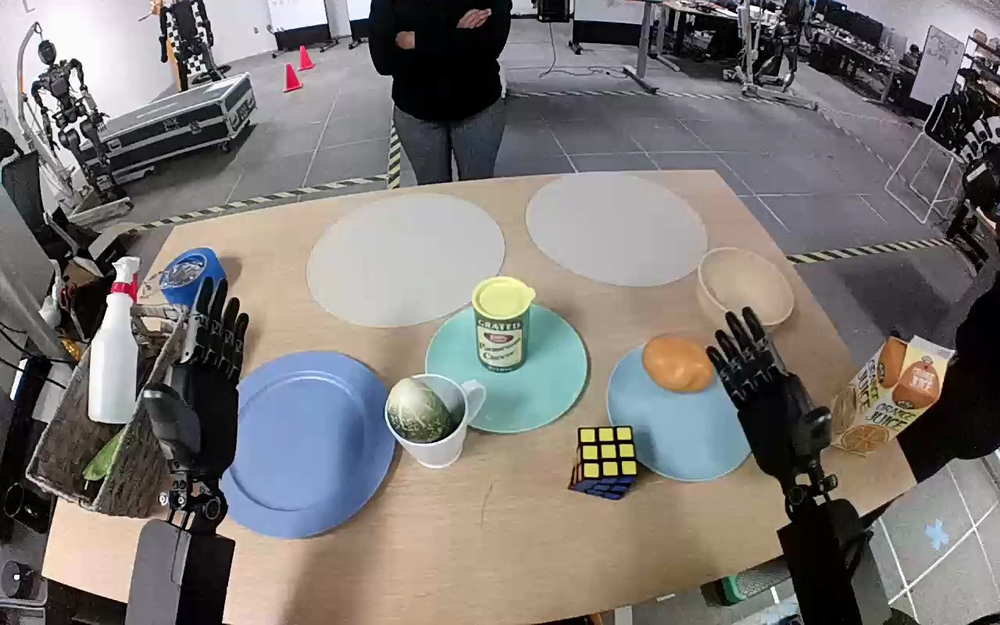

NVIDIA GR1 · 26
Video 26

Visual review action_review.json
{
"prompt_protocol": "humanoid_action_v1",
"prompt_provenance": "visually_authored_from_video_and_initial_frame",
"reviewed_contact_sheets": [
"sheet_001.jpg"
],
"inspected_frame_stride": 2,
"inspected_sampled_frame_count": 60,
"initial_scene": "Forward-looking robot-mounted view with both forearms entering from below. The green mottled zucchini protrudes upright from a white mug beside the empty dark blue plate on the robot's left. Both hands initially open; a person stands beyond the table without participating.",
"observed_sequence": [
{
"frame_interval": [
0,
16
],
"action": "Both hands remain open over the table; zucchini is upright inside the white mug.",
"confidence": "high"
},
{
"frame_interval": [
17,
55
],
"action": "Left forearm advances from beside the empty blue plate toward the protruding zucchini; open fingers surround its exposed upper portion. Right hand stays open without contact.",
"confidence": "high"
},
{
"frame_interval": [
56,
72
],
"action": "Left fingers close around the exposed zucchini and begin lifting it, with the lower portion initially still inside the mug.",
"confidence": "high"
},
{
"frame_interval": [
73,
90
],
"action": "Left hand lifts the zucchini completely out of the mug and carries it leftward over the empty blue plate. Mug remains upright and empty on the table.",
"confidence": "high"
},
{
"frame_interval": [
91,
112
],
"action": "Left hand lowers the held zucchini toward the blue plate while rotating it from upright toward a horizontal placement.",
"confidence": "high"
},
{
"frame_interval": [
113,
119
],
"action": "Left fingers open as zucchini settles horizontally onto the blue plate. Hand stays close beside it at the endpoint; right hand remains open and uninvolved.",
"confidence": "high"
}
],
"arm_hand_roles": {
"left": "Only manipulating hand: grasps exposed zucchini, lifts it from the mug, transports it to the blue plate, lowers it and opens its fingers for placement.",
"right": "Remains open and away from objects throughout; no grasp, stabilizing contact or transfer.",
"coordination": "Single-hand manipulation; the right hand does not assist and no person participates."
},
"anatomical_side_evidence": {
"description": "Source PNG is a forward-looking robot-mounted view, with forearms extending from the lower left and lower right toward the table. Their opposed thumb/palm orientation and continuous wrist-to-forearm attachment identify the active lower-left forearm as the robot's left arm, consistent with the original left-hand annotation. The right forearm remains continuously visible on the opposite side.",
"confidence": "high",
"limitations": "Shoulders and torso are outside the robot-mounted camera view; naming uses embodied forward perspective and visible forearm/hand orientation."
},
"terminal_state": "Zucchini lies horizontally on the blue plate; white mug is upright and empty. Left fingers are open beside the zucchini and the thumb remains nearby; no complete withdrawal is shown. Right hand is still open away from the manipulation.",
"uncertainties": [
"The exact final thumb-to-zucchini separation is partly obscured; the fingers visibly open and the zucchini settles on the plate, but full hand withdrawal is not shown."
],
"annotation_discrepancies": [],
"evidence_frame_indices": [
0,
44,
60,
72,
80,
90,
108,
112,
116,
119
],
"selected_execution_status": "success",
"inspection_coverage": {
"full_source_frame_range": [
0,
119
],
"sampled_frames": "Every second source frame from 0 through 118; all 60 sampled frames visually inspected in the single returned contact sheet.",
"native_frames": [
44,
60,
72,
80,
90,
108,
112,
116,
119
],
"source_initial_png_inspected_at_native_resolution": true
},
"video_id": "26",
"dataset": "NVIDIA_GR1_100",
"dedicated_review_agent": "review_gr1_26",
"review_source_video": "NVIDIA_GR1_100/26/original/original.mp4",
"source_frame_count": 120,
"source_fps": 20.0,
"native_detail_frames": [
44,
60,
72,
80,
90,
108,
112,
116,
119
],
"world_model_prompt": "The robot uses its left hand to grasp the green zucchini protruding from the white mug and lift it completely out. It carries the zucchini over the empty blue plate, lowers it, and opens its fingers to leave it lying on the plate. Keep the camera fixed; preserve robot geometry, physically valid joint motion, and normal gripper opening and closing.",
"original_task_instruction": "Use the left hand to pick up zucchini from inside white mug to blue plate.",
"selected_segment": {
"start_frame": 0,
"end_frame_exclusive": 120,
"reason": "Complete original single-task reference; no cropping or trimming requested."
},
"source_video_sha256": "3a2decf9aac895a9dfa53f51f120a6da8d16d056c8818dadb6915c0956c7e456",
"review_completed_at": "2026-10-13T17:51:50.037470+00:00"
}